前几天把咕咕咕了半年的头像画完了，发到pixiv上获得了30收藏，还挺惊喜，虽然点开收藏者主页发现收藏夹都是几万张，不过至少他们主动点进我作品来看了。我还获得了第一个粉丝，虽然没有认识他的打算，但从0到1也是一个里程碑式的突破。
这个就是咕了半年的头像，普拉娜给自己用，阿罗娜给我的朋友小红。背景分别是我们研究生学校的校徽，以及代表我们两个专业的一些符号涂鸦。
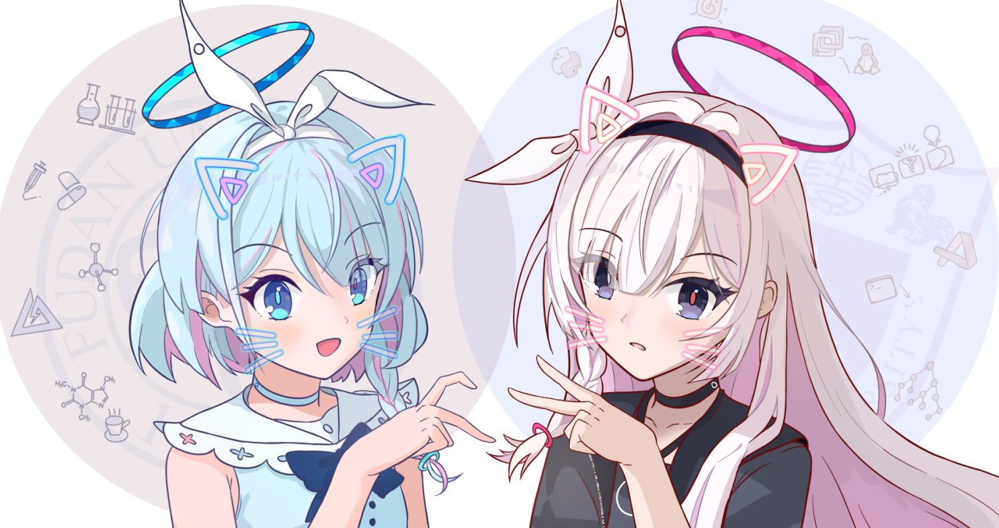
为了纪念pixiv获得粉丝的这一事件，这一天心血来潮，想把自己从小到大与画画的故事记录下来。正文开始之前，先用前言讲一讲写这篇长文之前的一些背景与心路历程。
前言
某一天晚上躺在床上有点睡不着，和dpsk聊关于我对各种爱好三分热度的事，我感觉很多爱好不是因为不喜欢了，而是没有时间，努力的正反馈太小了，比如我学习魔方，速拧平均20s后还学习了盲拧，再练习时发现进步极其缓慢，经常需要每天练习两个小时以上才能维持手感，后来就减少练习量，最后直接不练了，反正会退步。我想学的东西很多，没办法将精力集中在一两个爱好上，我时常感到遗憾，自己不是天才但是对很多事感兴趣。从小自己经历一帆风顺的人生，努力就会得到回报，反馈来的很快很及时，也养成了自己要强的心理。上大学前，我拼了命和别人比，不是为了应付家长的期望，而是想炫耀自己的学习能力，过了四年的大学生涯，佛系的心理逐渐养成，我仿佛真正找到了迷失的自己，开始关心自己，允许自己平庸，允许给自己心灵放假，卸下了内卷的伪装。尽管如此，我仍然知晓时间才是最宝贵的资源，想借助自己比别人稍强的学习能力，在有限的时间获得别人没有获得的技能，也许要强的内心永远无法与佛系相容，我一直在两者之间寻找平衡。dpsk的回答非常会讨好人，我也知道我并不是想从它这里领悟到人生，更多的是跟自己内心的一个对话，也是看看dpsk是否能判断出自己偏激的一些想法。
在b站上看到一个熊大的视频，讲极度自卑也是极度自信的表现，相信自己的能力，对自己有很高的期望，不接受自己平庸的现状，就会产生自卑心理。我很支持这样的观点，不过我觉得自信这个词并不准确，汉语中，自信作为自卑的反义词，更应该指对当下能力的肯定，而非对理想中的自己期望值的肯定。每次刷到网上的好看插画，即使不是一线巨佬而是刚入流的小画师，我也会异常的羡慕，羡慕他们可以用绘画当做自己感受世界的表达工具。我对自己这几年精心修炼出的佛系心理产生了天然的抗拒，时常认为懒惰是自己最大的敌人，而不是更客观的时间与精力，自卑心理油然而生。如果说自卑真的与自信同根同源，我便进一步理解了自己对画画的真实态度，不是普通的爱好，而是希望陪伴一生的内在力量，我希望，也认为自己能通过不断的努力，即使是堆时间，也要达到一个让自己满意的水平。
对比会使人受伤，很多网友抱怨自己努力半生却不如他人刚出生所拥有的东西，大概说的只是钱。当你摆起烂，看淡或者假装自己不在乎金钱，你还会发现另一个绝望的赛道， 这个世界上强者特别多，很多人无意或有意在网上制造了年龄焦虑，年纪轻轻获得了他人梦寐以求的能力，除了年轻以外，大佬们晒出或分享出来自己的某种能力，仿佛这个领域的“小目标”，只能供人赞叹，无法达到。我是高敏感群体的一员，我们习惯了羡慕与嫉妒，因为情绪不够稳定，从而被大众告知，要承认自己的不足，接纳平庸的自己，我在适应佛系心理的过程中受益良多，但也无法向年少轻狂的自己撒谎，我给自己商量出了一个下限要求，那就是我不接受自己的能力与拥有的东西完全是另一个人的子集。别人出生在富有家庭，我可以学习成绩更好；别人的社交能力突出，我可以专攻自己的单机游戏，和同好一起玩耍；别人小时候就考了钢琴十级，我可以在体育上、美术上比他们强些；别人出国旅游见过巴黎铁塔见过自由女神像，我在竞赛场上与队友一起经历惊喜与痛苦，一起笑谈追梦时光。一个人就算再强大，有再好的背景，也无法做到万能的神，总有不如别人的地方，总有没体验过的经历。我不希望一个人的能力完全是别人的子集，一个人即使没有特长，没有出类拔萃的能力，只要他的能力不能被他人完全覆盖替代，我就认为他有自信的资本，有在世界上展示自己的机会。这样的想法或许很幼稚，也比较坑人，却陪伴了我近十年，对我的性格产生很大的影响，也是在追求佛系道路上，自己要强心理的最后反抗。在这样的想法影响下，我不断探索各种爱好，并非道听途说就去尝试，而是去尝试自己确实喜欢的东西。但时间总是宝贵，精力总是不够，我在竞赛上的追求，学业上的追求，内耗心理的捣乱，导致及时的正反馈成了我的刚需，进步陷入停滞我就会慌乱，时间像身后不断逼近的悬崖，催促我对爱好进行舍弃，我成了一个三分热度的人。但我始终坚信自己与那些轻易尝试新事物就搁置的人不同，我感受过不同的爱好的魅力，即使没有发展成各个领域的大佬，也有过不错的人生体验。
我在一个探讨“主动退坑地球ol是否应该尊重”的帖子下写了这样的评论：“人在世界上走一圈的意义只有两个，体验与创造，当这两项得不到满足，我认为退坑是一种解放。”体验与创造，一个是让世界指向自己，一个是让自己指向世界。颠沛流离的人，坚强活着是一种选择，但有时因为条件所限，人生的体验太过单一痛苦，也没有能力创造或给予他人帮助与温暖，这是可悲的人生，我们应该尊重退坑选择。当然，抑郁患者错误估计了这两项，很多患者有大把获得人生意义的机会，我们会更希望他们能从暂时的阴影中走出来，很多人把不如意者与抑郁患者放在一起讨论，其实是不负责任的。
对于一个有能力追求人生意义的人来说，网络上推荐每个人拥有三种爱好：一是感受型，听听音乐，打打游戏，感受世界的美好，让自己的心静下来；二是创造型，画画写作做视频，将自己的想法授予或分享给他人，创造价值证明自己来过世界；三是运动型，打打球跑跑步，身体好精神好，这是基础也是很棒的添头。对于我自己而言，在创造这一项上，我认真思考了自己与画画的关系，从小我的文字与语言表达能力都不强，语文从来没考好过，但我又有很强的分享欲，想找一个渠道输出自己典型INFP的特征，那就是自己脑海中天马行空的想象。画画成为了非常好的选择，适合内向且细心的自己。我只学了半年的板绘，但是我有近十年的二次元审美积累，八年里在纸上陆陆续续临摹了二三十张，我已经感受到画画已经不是一个简单的爱好，和上面所说一样，我坚信它会陪伴我的一生，中年以后也许对二次元的兴趣不再热烈，但我会一直用画笔当做自己连接世界的工具。
在大学毕业，即将进入研究生的这个时间点，也是我第一次换上自己所画头像的时间点，我想对前面的人生与画画的渊源进行一个自传总结，留给多年后的自己，也可以当做朋友间茶余饭后的谈资。在高中竞赛时，我的朋友小红在洛谷投稿了一篇日报《【洛谷日报#276】如何优雅的和竞赛分手》，我当时很反对，我说每个人都有自己的故事，很多人的故事比你的精彩的多，你有什么分享自己故事的必要。后来我也渐渐理解了这个做法的价值，在清一色炫黑科技的洛谷日报目录中，一篇退役指南，很有特色也很吸引人。初三时我和小红一起读过台湾作家龙应台的作品，里面有句很简单却很深刻的名言我记了很久：“我们拼命地学习如何成功冲刺一百米，但是没有人教过我们：你跌倒时，怎么跌得有尊严；你的膝盖破得血肉模糊时，怎么清洗伤口、怎么包扎；你一头栽下时，怎么治疗内心淌血的创痛，怎么获得心灵深层的平静；心像玻璃一样碎了一地时，怎么收拾？”，无论我朋友写日报时是否有想起这句，但我也感受到，我们每个人平凡的经历并非毫无价值，我们精心维护的那些对世界的感受，其实可以与很多陌生人共鸣。我喜欢散是满天星的比喻，它简单而有力，在空气好的城市，出门散步抬头就能看到满天星辰，许多普通人未曾注意的小星星，天文学家细心地为他们每颗进行了命名。如果把我们每个人的故事比做星星，即使光芒微弱到肉眼看不到，它依然有存在的意义，等待有心人去探索，去分析，去欣赏。
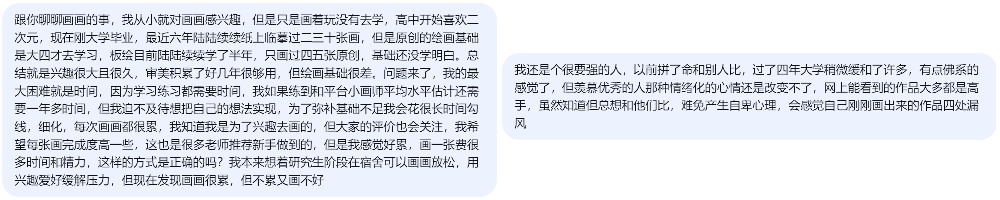
正文
一、小学
和大多数人一样，小时候的自己有一股强烈的创作欲望，我曾在我妈教书的学校办公室里用彩色粉笔在地面上乱画，好在没人骂也没人阻止，遗憾的是忘记画的内容了。小学没有什么像样的美术课，没让买过画画工具，不过我倒是自己出于兴趣买过油画棒，和几套便宜的水彩笔。我喜欢在白纸上画颜色大战，和现在B站上的“男人减速带系列”差不多，自己玩还可以设计一些逆风翻盘的故事情节，玩的不亦乐乎。小学的各种绘画或手抄报活动几乎没有落过，不过我好像从小就不喜欢动脑子，总是去网上找一张卡通图然后直接临摹。有个学雷锋的主题绘画比赛，我还领了张二等奖小奖状，我把它贴在家里的奖状墙上，和期末考试的大奖状一个待遇。现在想起小学画的画，基本都是涂鸦水平，不过因为我画的很认真，出来的效果倒是像那么一回事？也仅仅是尽可能像原图罢了。
小学也并非只会临摹，当时我有一个有趣的同桌，给我讲各种无厘头的冷笑话，我把它们用火柴人漫画的形式记录下来，无师自通的火柴人漫画《我是一个爱科学的小笨蛋》便是在当时产出，现在还在家里车库的一个角落放着，里面好像讲了伽利略在探究科学的路上被鹿一脚踢死，额什么鬼？不过伽利略不是主角，而是主角引用的小故事，主角的经历要更加无厘头一些，比如吞下一大块磁铁变成万磁王，还好只是在漫画里，好危险的感觉。小时候对科学有深厚的爱好，能用充满张力的火柴人画出自己脑海里的无厘头科学世界应该也是个比较幸福的事。
我爸发现我爱画画，在我三年级的时候买了一个300块钱的绘客数位板，当时我在电脑上的绘画能力也就微机课玩一整节xp画图练出来的，会使用直线和油漆桶，用喷枪点缀一下，剩下全靠天花乱坠的高饱和涂色。买数位板赠送了PS软件，我爸给我找PS的教程，一上来就是用钢笔画火苗，把我看懵了，这真是小学生该学的东西吗？结果自然就是，玩了两天数位板就吃灰了，PS这东西过于高级，我将来又不当画家，我学这玩意儿干啥。虽然后来再也没用这数位板画画，但它在后面的十几年内有着不少的作用，我妈教网课用它，我高中玩osu也用它，不过那都是后话了，我爸心血来潮买来这么一个东西还真不算亏。
大概是小学五六年级的时候，在网络上刷到了洛天依相关的图片，应该是人生第一次接触二次元，当时只觉得这些卡通小姐姐长的还挺别致，搜索栏旁边还有什么洛天二、东方栀子，我想他们应该是一家的吧，不知道是哪个动画片里出来的，其他的也没有过多关注了。当时正是暴走漫画和QQ表情包斗图的流行时期，对一个未开智的小孩哥来讲，这些东西的吸引力比那些漂亮的卡通小姐姐要大的多。
二、初中美术课
升入初中，虽然是中考竞争力很大的私立学校，不过学校好像对音体美教育很重视，上初一时，每周都会安排一节美术课，只不过每节要买一大堆东西，好贵好心疼，当时和爷爷奶奶一起住，找他们要钱时总会不好意思。看得出来，学校和门口超市关系很不错，如果你某节美术课忘带或者没有买画具，就会受到严厉的惩罚，在我们的记忆中仿佛比九科作业全没写还要恐怖。我们初一的美术老师就很不一般，沈腾一般的发型，下面长着沈腾一般的脸，还有年级主任一般的可怕气场，不知道我同学从哪的小道消息听来的，说他当老师之前是混黑帮的，吓哭了。一听到有人忘带美术书，直接开始十分钟的口诛体罚，如果训同学的时候你偷笑了，就可以获得在教室外往返跑100次的奖励，看着教室外来来回回跑的同学，教室里个个学着大力王和faker的表情管理，却总有绷不住的同学，第二个笑出来的同学就不是折返跑那么简单了，次数不变，跑步改成蛙跳。里面上着美术课，外面有人一样高的蛤蟆来回蹦跶，谁受得了，要说人这一生有几个拼尽全力也要蚌住的时刻，必须算上初中的美术课。仅仅一节课，美术老师树立的威严形象不亚于早上进校迟到时撞上年级主任。
美术课买过笔墨纸砚，练过隶书，墨水瓶子有大口有小口，往砚台里挤墨水的时候，我总是拿那个小口挤，用的时间久了就凝固在口子上，越挤越费劲，终于有一次大口被挤崩了，整瓶墨水喷满了桌子和前桌的脖子上，幸好前桌是我的好基友，不然内向的我要欠他一辈子人情了。在全班的齐齐哈尔下，他骂骂咧咧地跟我一起去楼下洗校服了，那几节课写毛笔字没啥印象，和他去楼下水池洗校服倒是记得挺清，正好找理由翘了一整节美术课。
后来还有水彩课，买了全套的颜料和几杆水彩笔，没记得课上画过什么，不过有一次老师留周末作业画一张水彩画，自由发挥画啥都行，下周交过来评选，这大大激发了我的创作欲望，不过和小学一样，回家之后还是去网上找图，找了一张啤酒瓶子照片就开始临摹，装模作样地在调色板上调色，画出高光和阴影，只是为了尽可能和网图长的像，画完感觉画面好空旷，就一个啤酒瓶子感觉不够，于是拿来家里的苹果放盘子里临摹。一个酒瓶一个苹果，就是画面的全部了，其他位置是一望无际的留白，不过我还挺满意，至少颜色还挺像的。学着美术书上的命名，我用黑颜色在角落写上《静物》。第二周交作业，我的这张《静物》被老师划分到第二档，第一档只有一张，也是画的果盘，不过颜料涂满了整张八开，看起来确实漂亮，那时候才意识到书里教的那些大师风格什么留白全是骗人的，普通人哪画得出那种氛围。前三档的画挂在了教室后面一周，印象里后来没拿回家，估计是老师收走了，挺遗憾的，当时没有什么收藏意识，照片都没留下。
美术老师还给我们留过设计手抄报的作业，要说小学那些手抄报活动我是一次也没落下，于是我就很有热情，开开心心地开始画各种花边，但也仅限于画花边了，手抄报主题是祖国，需要画图的地方就去政治书上找插图临摹，当时不知道华表顶部是神兽，我以为是只鸽子，于是把华表翅膀直接画神兽上了，神兽的头还尖尖的，因为画成了鸽子嘴巴（没办法，初中教学楼外面全是成群结队的白鸽子飞，上课走神的时候盯着窗外看，满脑子也就是鸽子啦）。最后好像是因为布局整体像那么一回事，老师给评了个98分，虽然看得出基础菜到姥姥家。
真不巧，学校又有个宣传消防的黑板报活动，班主任找了班里画手抄报得分最高的五个人，好像是四个100加我一个98。为了赶时间，除了自习课外，我们还在中午留校了一次，班主任给我们带了免费午餐汉堡，我们不停地感激“高老师您怎么人这么好！”我吃汉堡是一层一层吃的，因为从小被灌输先苦后甜的思想，于是先吃面包再吃肉，被班主任嘲笑了，难蚌。一起合作的时候，我发现自己只会给板报画几个花边，至于消防员、消防车、喷出来的水、燃烧的火焰，全都是其他几个人画的，写字也不是我写的，我从小到大写字并不算好看。黑板报用粉笔画好线稿之后，我们正好用美术课剩下的水彩颜料上色，我全程是被指挥的，不过也很有参与感，毕竟上色只是个体力活，我用蓝颜料描水的时候他们四个全都去描火，班主任赞叹我们画的好逼真，水很真，火更真。现在想想当时的场景真的好像《樱之诗》第二章结尾，大家一起用颜料涂壁画，和樱之诗里一样，我们这里也是两个男生，女生团里甚至还有自己暗恋的人。如果我和直哉一样是个天才该多好，可惜我既不是天才又没有努力过，连当时是不是真的喜欢画画都不懂。遗憾的是，初一画板报的记忆基本上是大学之前最后一次和美术两个字有交集了。
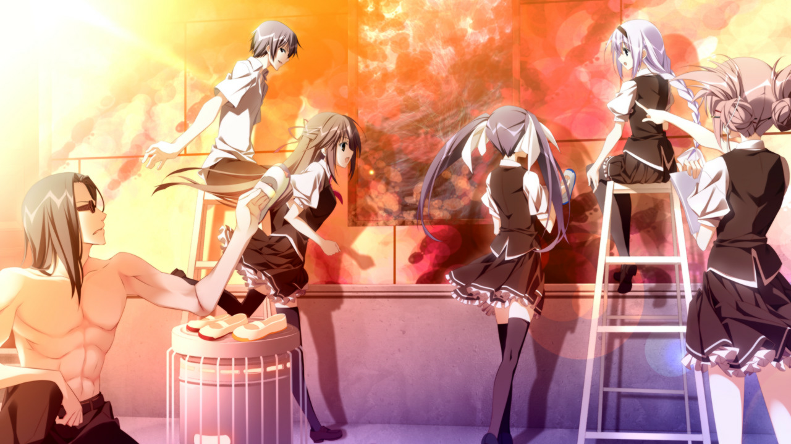
虽然初一被校门口超市狠狠地捞了一笔，留下了一堆没用的一次性画具，不过倒是留下了不少残缺的记忆，谁能保证这些记忆不会在几年后重新唤醒呢？就像很多中小学考钢琴的人，很多人都感觉小时候没有兴趣，被强逼学了钢琴，但是长大之后，弹琴却成了离不开的爱好。从小学到初中的美术经历并没有让我打下一个很好的基础，我更多的行动都是以玩玩为主，也从没有意识去上什么兴趣班，感觉都是吼人的赚钱玩意。真到了后来的某一天，意识到画画可能是陪伴我一辈子的爱好，我就会感慨这一段时光仿佛是一段孽缘。
初二学校便不再设置美术课，而且为了备战直升考试，我被分到了尖班，一年下来整体还是比较轻松，因为我数学物理比较好，而直升考试侧重的便是理科。我们的数学老师很出名，比较幽默，很容易和我们打成一片，我们在粉笔上刻字，老师一挑发现是根儿尚方宝剑，便珍藏下来。有同学还不知道从何处带来了三厘米粗的超大彩色粉笔，软乎乎的写起来还挺舒服，为啥没厂子批量生产这种粗粉笔呢？断粉笔频率低了不是更节约资源吗。后来雕刻粉笔成了班里流行活动，前桌女生雕刻出一个小兔子头，非常标准非常可爱，激发了我模仿的欲望，我捎根粉笔回家，一中午不睡觉，拿圆规雕刻我的尚方宝剑，奈何技术太烂，完成度远远没有那个小兔子头高。从那时我意识到自己的悟性并没有那么高，以前的成就只不过是一股热情加上认真的态度达成的，一个小兔子头估计能让我记上一辈子了。
三、竞赛！东方？直升部！
这是一段很有成长性的时光，我顺顺利利地通过了直升考试，没有了中考的压力，在市里一中过上了愉快且有意义的一年初三。为了给新同学们一个好印象，我把我QQ的暴走漫画沙雕头像改成了第一个二次元头像，樱满集，当时只是在网上随便找的网图，觉得很帅，并不知道是什么动漫里的，但之后便一发不可收拾地清一色二次元头像。
初三的一节音乐课上，同学放了一首《世末歌者》，歌很好听，视频很好看，歌词也很美，不过唱歌的小姐姐。。。声音好尖啊，怎么会有这么神奇的嗓音，这还是人类吗？回去搜了才知道是虚拟歌姬唱的，乐正绫，人美声甜，是16岁充满活力的高中生小姐姐呀！和之前刷到的洛天依呀初音未来呀是同一个类型的唉，作为一个小资历，我直接刷新了三观，我之前只听说过虚拟歌姬的概念，我还是头一次听到原来歌姬可以唱的这么好听。放歌的同学跟我说过，pv里间奏部分的文字非常感人，当时我不懂什么是术曲，以为这首歌的背景就属于歌姬的人物官方设定。不管怎么说，这都是我第一首喜欢上的二次元音乐，虽然我唱不上去，但大学几乎每次KTV都还会去唱一遍。这辈子真正认识的第一个歌姬，不是洛天依也不是miku，而是乐正绫，从某种意义上来说，这甚至是我认识的第一个二次元角色。
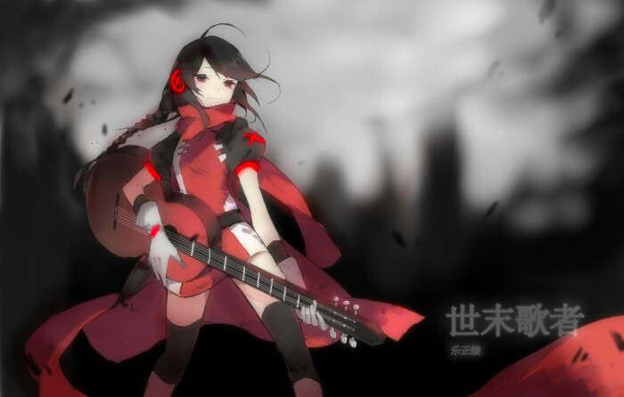
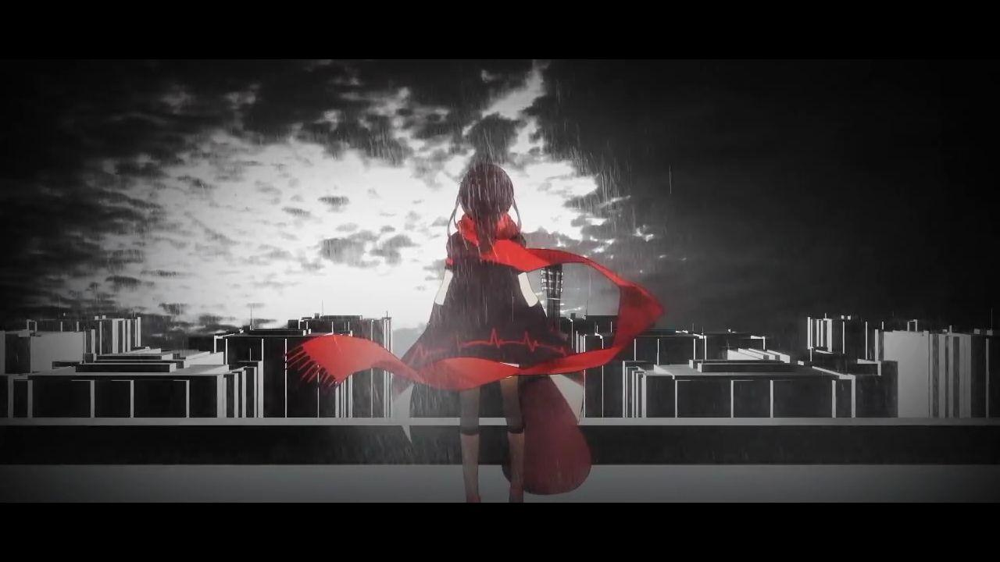
经过后来我的观察，班里的一些同学喜欢在草稿纸上画这种卡通风格的小姐姐，初中同学的QQ空间里也会发一些自己画的二次元小人，我才第一次有了对二次元的认识。初三才真正了解这个领域，的确算的上消息相当闭塞了。顺带一提，当时是2017年，b站已经创立了八年。
初三时，我还做了一个影响了自己一生的选择，在五大学科竞赛中选择了信息竞赛。凭着我对编程的真挚爱好，成功在一年的自然筛选中坚持到了中上游。初高中的竞赛经历让我获得了更多的网络时间，也让我有了更多与各种圈子沟通的机会。
初三这一年，我们在机房有很多欢乐时光，有人掌握撬锁神技，到了竞赛课时间但是教练还没来的话，就早早把机房门锁撬开，带头人大喊一声“颓废！”，整个机房便争分夺秒地进行各种娱乐，当然不乏有被教练抓个正着的时候，“颓废”两字成了竞赛生间的黑话。除了人人爱玩的火柴人打羽毛球等小游戏，我还从机房大佬（已清北）U盘里考来了一款跳跃游戏，窗口可以自由缩放，按esc就能瞬间关闭，游戏内容也很简单，非常适合颓废。后来了解到这个系列叫i wanna，不只有这一款，还有更加出名的本家。
刚升入高一的时候，我接触到了另一个改变了自己一辈子的圈子，我看到机房有同学在玩一款打飞机游戏，便用U盘借来耍耍，这款游戏叫做东方地灵殿。国庆去济南竞赛培训那会儿，我使用的还是只能打电话的老年手机，带着自己的笔记本电脑，一回宿舍也没有手机耍，便开始轮流打i wanna和东方地灵殿。由于地灵殿续关会从stage初重新开始，我那会儿甚至打不过easy难度的五面猫车，去网上找了视频看，六面boss是个长着翅膀举着太阳的天使，哇，我想这一定是太阳神吧，好有威严！后来才知道原来五六面都只是四面boss的宠物，那个光芒四射的太阳神，只是一只乌鸦。。。玩完东方再玩会儿i wanna，有个i wanna QoQoQo的作品，我发现里面的bgm都非常好听，冰雪关，森林关，彩虹关，三个bgm分别是《雪中月光》、大名鼎鼎的《春よ、來い》、V.K克的《镜夜》，后两首的知名度明显要高些，不过后面我会讲述，我与《雪中月光》还有着一段独特的回忆。
培训完回到学校，拉我入坑东方的同学发现我很爱玩，告诉我东方不止有地灵殿，而是一个系列，甚至还有格斗作品。我又入坑了最经典的永夜抄，虽然里面的人物几乎一个都不认识，但我找到了第一个喜欢的二次元角色—-上白泽慧音，差不多算是二次元初恋的感觉。慧音当本命的时间并不长，之后本命依次换成了二小姐、妖梦和早苗，至于慧音当时是哪里戳中了自己的萌点，现在还是没搞清楚（题外话，22年东方华灯宴的单曲《苍月下的决意》很好听哦）。整个高中生涯，我接触到的二次元内容中东方占了九成以上，头像也全改成了东方，对东方这个ip的感情非常深厚，是个实至名归的车万人。
高一信竞联赛后的寒假，我刷到了二小姐芙兰朵露的鬼畜视频，19年的1月25号，为了看这些视频注册了b站账号，之后还刷到了金坷垃、元首、葛平等洛谷里比较出名的鬼畜梗，作为鬼畜区用户入坑b站真是不好意思。什么？你问我为什么19年看的都是这么老的鬼畜，我告诉你，你是否知道蔡徐坤是19年4月份才出现在b站的，在此之前，b站鬼畜区还是以那几个元老级的音mad素材为主，而东方的同人曲，又是音mad原曲的重要组成部分。当时注册的b站名叫Flandre_495，整个竞赛生涯也一直在用这个id，配上一个歪脑袋的二小姐头像，之后在洛谷里就一直是西红柿炒鸡蛋的人设了。那段时间在机房里颓废的主要内容就是打东方的各个正作，以及开始收集各个画师的东方同人作品，从那时便开始了我漫长的二次元审美积累。
19年夏天，我们几个人去常州培训，花了好多钱，但是因为常州高级中学的大佬过于神仙，我们水平不在一个层次，所以待上一两周也基本没学到什么东西。那时正值梅雨的时节，我们每天打着伞步行从酒店去学校，旁边就是红梅公园，蒙着一层雨雾，我的手机从老年机变成了智能机，手机锁屏壁纸是萩原凛老师画的苍灵梦，苍灵梦是由原来的红色修改后的蓝色色调，和梅雨天气很搭，我焦虑着自己并不突出的竞赛能力，思考着那不确定的未来，整个人也融入了那蓝色的色调。在常州的那几天，我在b站上刷到了minusT的3D东方视频，先是看了灵梦打恋恋，然后去看地灵殿地底太阳，地底太阳有个P2制作过程，我有点吃惊，那一整个blender建模、分镜、动作、弹幕全是minusT一个人做的啊，这工作量有点炸裂，怪不得两年才更一集（其实是沉迷于画千年组小黄图）。除了3D东方，我还刷到了他用sai2画画的视频，【minusT】蕾米莉亚&芙兰朵露（万圣节12小时绘画视频），这个视频算是我的板绘启蒙，看完直接打穿了我的任通二脉，我这才醒悟，原来我有一个数位板也是可以画这种二次元东西的呀！那段时间我还刷到了一些别的板绘视频，有藤原老师的录播，有甘城老师画猫猫的录播，看着这些绘画过程，仿佛打开了新世界的大门，有一股热情在心里燃烧起来，却又不知道要烧在什么地方，就好像刚被问新的人生三问，你会啥？你想干啥？为啥想这么干？我好像一个也回答不出来。
从常州回到家之后，我找到了一根老旧的中华铅笔，随便抽出一张A4纸，想着画些什么东西，画一些不是老师的作业，也不是学校的活动，而是自己想画的东西，画点二次元，为什么突然想画呢？其实现在回想起来也不是那么清楚，当时竞赛压力很大，这个暑假过完，便是第二次冲击联赛，一年多的竞赛集训使得文化课知识学的支离破碎，小时候那个逢考必过的自己早已褪色。收拾好心情，把铅笔削好，看看能不能从画画中释放一点压力吧，毕竟印象里这是小时候最喜欢干的事，只不过这是第一次想画点自己喜欢的东西。当时刚好玩过东方三月精，于是就画一张月光妖精露娜吧，从网上找到一张满意的同人图，开始了临摹。画完的效果总体来说比较满意，看不懂的细节就是随意勾几笔糊弄过去了，只要原图足够好看，临摹出来大概也就这个样子吧，当时的我想不出怎么让它变得更好看。虽然是个临摹的简易作品，不过从这一张开始，我与二次元与画画便开始逐渐联系了起来。
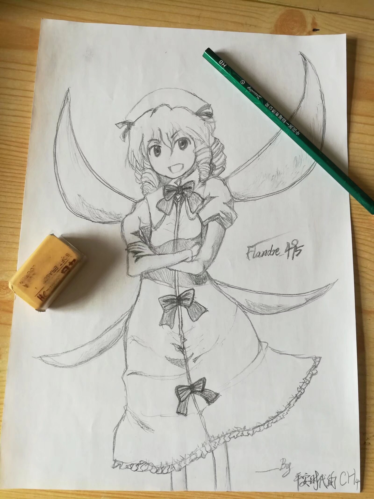
我经常喜欢写日记，许多记忆快要模糊的事情都可以从老早之前的日记中找到详细的线索，当时的心情，当时准备做什么。我曾把i wanna冰雪关的无名bgm录下来，在网易云中意外找到了原曲，正是那首《雪中月光》，这是一首东方同人曲，原曲是旧作的《永远的满月》。在我2019.07.13的日记中有这样几段话：
1 | 在常州回来的高铁上，我把Qo重新玩至60关，看到了熟悉的冰雪世界，听到了熟悉的小提琴。录下来仔细听，循环了一遍又一遍，听这种慢节奏的歌曲，感觉整个时间都慢下来了。 |
刷完minusT的3D东方系列后，我学习PR，用《雪中月光》当bgm做了3D东方的一个混剪视频，投稿到了b站上。这是我b站的第一个投稿，在日记中我曾写到因为看到有人投币而激动的睡不着觉，感觉确实有点夸张，后来想想，毕竟是第一次把自己创作的东西放到互联网上。虽然有很多纪念意义，不过由于技术实在差劲，早就当做黑历史删掉了。
7月18日，京阿尼工作室着火了，虽然我从来没看过番，但那些作品都还是有所耳闻的，b站上有一个R.I.P.视频，bgm一响把自己DNA唤醒了。小学时候在家玩跳舞毯（我的音游启蒙），有一首魔王曲是电吉他很爽的日语歌，可惜那古董程序里歌名全是乱码，我有快十年没有听到了，一直也不知道这首歌叫啥，结果在R.I.P京阿尼的视频里听到了，这首歌叫《God knows》，凉宫春日里最出圈的一首片中曲。后来，在高三的闲暇时间去b站看了凉宫春日TV以及剧场版，这是人生中的第一部番。
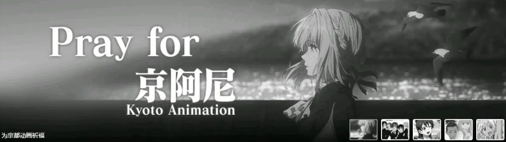
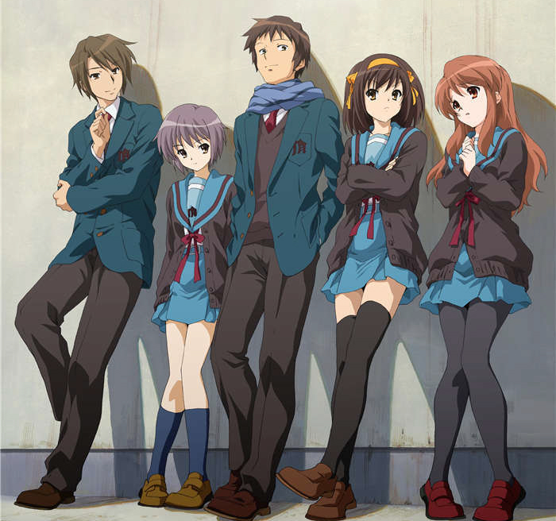
疫情从高二的寒假开始爆发，对于竞赛生来说，由于不需要上文化课，这个漫长的寒假似乎要一直延续到暑假（疫情给我带来了很大的影响，我本可以花长篇大论来讲述，但这里只讲与二次元与画画有关的内容）。为了缓解压力，除了进行各种娱乐活动外我又画了两三张画，在画键山雏这张时我意识到了“眼睛是心灵的窗口”这一重要思想，把眼睛画好看整张图就画好了一半，这成为了近几年画画时最坚实的信条。我感觉我画出来的效果有所进步，这种反馈感还是挺振奋人心的，除了眼睛以外我还认识到另一个关键的因素：一张图画的时间越长，它就会越好看。所谓临摹的最笨保底做法，便是堆时间，一张图临上十个小时，画的不准就擦了重画，我不相信有人能画的难看。很可惜，时间总是宝贵的，只有又闲又喜欢画画的人，才会堆这么长时间去临摹别人的画作试图让自己开心。
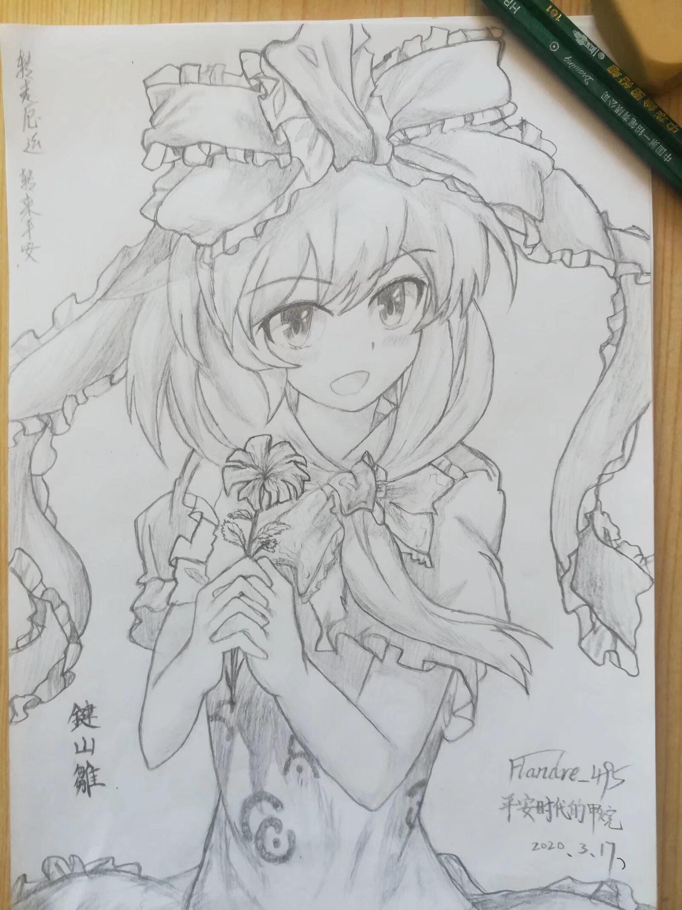
四、信竞退役
从竞赛转入高考备战的分水岭，也是让我比较心碎的一次经历，便是六月份的竞赛省选，落选在意料之中，疫情导致的省选推迟像缓刑一样压制着自己，只不过接下来我要面对的是高三一年时间补齐碎了一地的文化课知识，我陷入了一段时间的沉沦，我的朋友小红也正是在那时写下了《如何优雅的和竞赛分手》，虽说是写给我看的，不过看完我倒是没啥感觉，洛谷里却全在共鸣，估计是长时间的打击让我已经有点心累了。
在退役前有个学信竞的朋友给我推荐过一款叫《秽翼的尤斯蒂娅》的galgame，简称脏翅膀，暑假在家一边补文化课，一边找点转移注意力的事，于是想起这款游戏。和绝大部分二次元不同，我的第一部gal比第一部番还要早（正如前面所讲，我在高三学期内才去看了第一部番凉宫春日的忧郁）。配合当时跌落到谷底的心情，脏翅膀主角团从底层一步步走到顶层看到世界真相的剧情很合自己的胃口，再加上从小到大没吃过这么好的东西，一部作品直接把自己干成了八月厨。本来是打算推完第一章剩下的留到高考后再看，结果没忍住直接一口气推到结局了。到目前为止脏翅膀依然是自己最喜欢的作品，也是我给朋友安利的最适合入坑的一作。
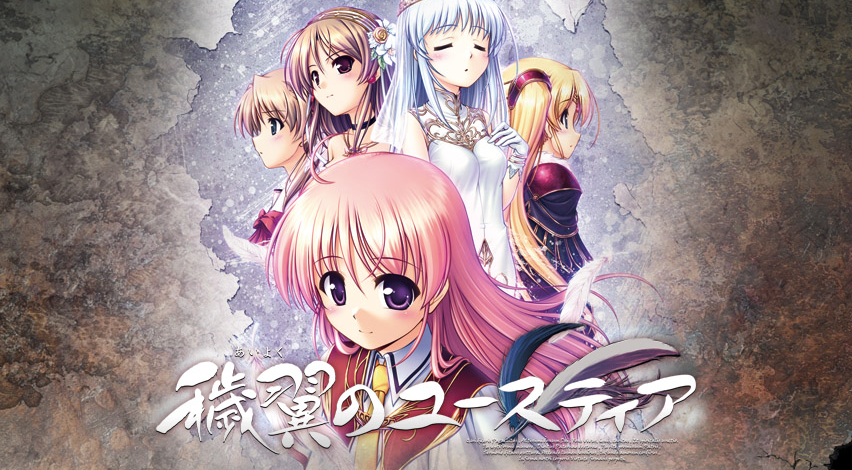

推完脏翅膀后，我便开始了紧张（真紧张吗）的高三复习（预习）中去，因为学竞赛欠了太多文化课知识，导致成绩一直不是很理想。与电脑脱离后，心里还是那些心心念念的二次元，当时一个月回一次家，回家后找广告店把自己最喜欢的几张插画给打印了下来，塞在了各学科笔记本当中，当做学习时的心理调剂。其中有anmi的水中双子、an2a的蓝绿配色早苗妖梦，ke-ta画的依神紫苑与铃仙，几张萩原凛的灵梦，几张甘城老师的猫猫，minusT画的恋恋和永琳。当时我有一个朋友很喜欢Hiten老师画的闪亮亮的图，印了好几张，学校每周都有考试，我们成绩差不多，便用这些小图当赌注比成绩，败者要给胜者挑一张图。毕业后，有一部分的图已经忘记塞在哪里了，大部分还在笔记本中塞着，以及盒子里的一张战利品Hiten。下面是我pixiv上最早关注的几位老师，以及现在能找到的几张小图。
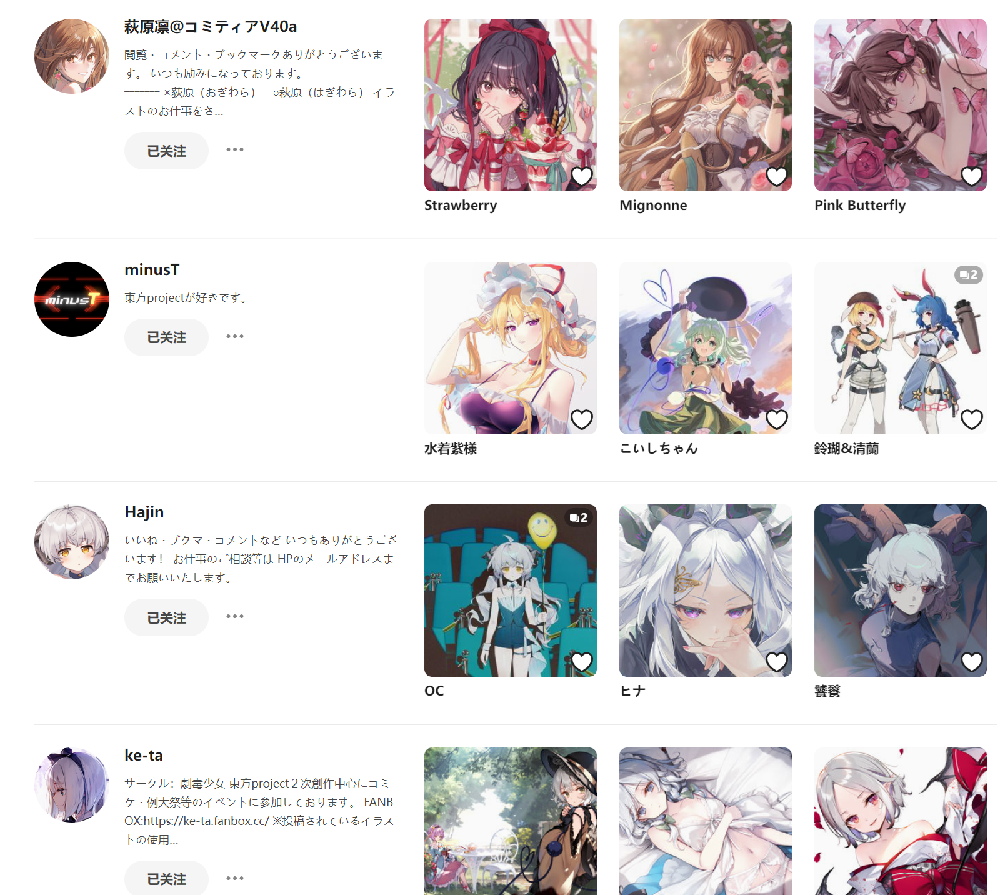

高三时期同学们当中不乏有洛天依的忠实粉丝，有一段时间学校超市进货了一批洛天依代言的香爆脆干脆面，成了同学们疯狂抢购的对象。一些干脆面里会开出城市小卡牌，凑齐八张城市卡可以领洛天依盲盒，搜齐4张ssr可以领洛天依限定手办！那段时间超市真是发了波小财，教室垃圾桶里全是干脆面包装。但是大家都懂，上海这张卡是抽不出来的，只能抽出其余的七张，也不乏有谣言称哪个班开出了上海卡，但总会被辟谣，因为压根没人见过上海卡长什么样，能在一个学校超市凭运气抽出上海卡的概率，好比一位中专生靠努力闯入全球数学竞赛前几名。当年很贪吃，买几包放进书包里，自习课掏出来吃两口已是常态，仿佛对我来说吃才是目的，集卡是顺带的（好像这才是正常的吧喂！）。我还抽到了一张很少见的ssr，虽然没有任何用。我把一套卡七个城市加ssr放在了盒子里，一直保存到了现在。上大学后，为参加程序设计竞赛跑遍了全国各地，这套城市卡上的八个城市去过了七个，现在只剩厦门没有去过，杭州还专门去西湖边的集贤亭打了卡。
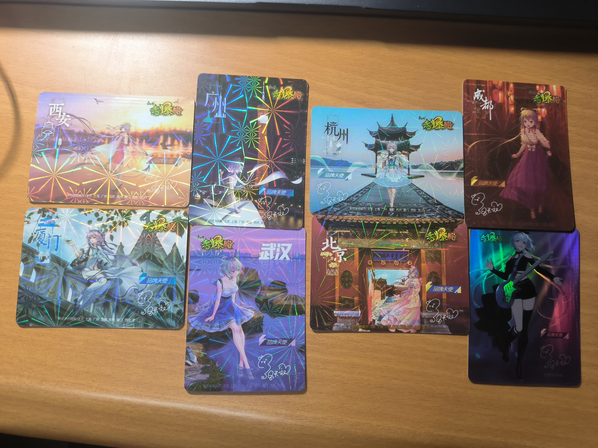
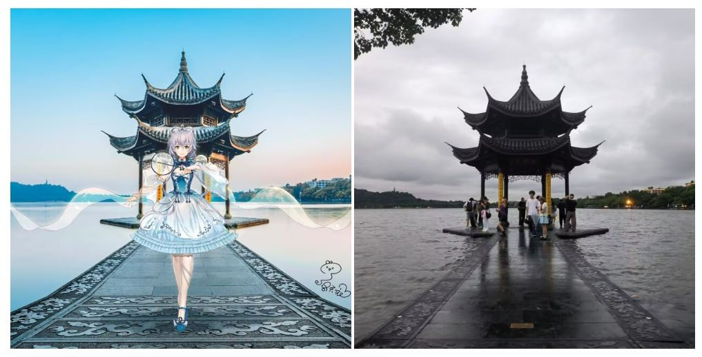
突击检查！如果七种城市卡抽到的概率一样，那么期望买几包干脆面可以抽出完整一套？做不出来的把概率论课本拿出来给我抄两遍。
高考前，我的东方本命已经是东风谷早苗了，复习时我会把早苗的图片单独放在桌子上，期待早苗给我降下奇迹。
21年高考终于来了，数学崩了，寄寄，摆正心态迎接第二天。物理考完出来和同学们聚在一起吐槽，吐槽到一半，脑海里突然闪过一丝寒意，虽然没人对答案，但是我记起我好像把最后一道大题写错框了（倒数第二道大题19是分页两个框，最后一道20框在反面，我把20题写在了19题第二个框里），我默默地离开人群，跟家长打电话说可以考虑下复读的事务了。我们选科是物化地，第三天上午就考完了，下午回宿舍收拾东西加疯玩，隔壁宿舍带我入坑了音游phigros，成为了我真正意义上开始玩的第一款音游。
7月初志愿还没出，就已经跑到衡中开始我的高四生涯（当时在省内只要交钱都是可以去衡中复读的，现在不行了），在衡中看到几个老熟人，相视一笑，唯有难崩。其中有个高三同学还和我分到了同一个复读班，他绰号是“阿棍”，然后因为一些奇奇怪怪的原因他叫我“鱼哥”，正直当时“潘嘎之交”盛行，我们俩便经历了一年的“鱼棍之交”。由于我们班主任抗不起事，我俩在班里成绩是领先的，犯事是频繁的，认错是积极的，改正是不存在的，班主任管不住，我俩在班里混得风生水起，我甚至还是班里电教员，拥有控制教室多媒体的至尊权利。因为有这些老同学的陪伴，高四这一年虽然很累，但是并没有那么压抑，我是幸运的，成绩还算稳定进步，那些成绩不好的同学可能就痛苦的很了。最终在22年第二次高考，遇到了有史以来最难（没有之一）的数学新高考一卷，我数学物理考的好，直接爽起来。第二次高考比第一次多了50分，考到了电子科大，读软工。录取后我和班里另一个同学一起回市一中拿档案，有个老师问我们考到了哪里：
1 | “山东大学” |
喂老师您是根本不知道有这个学校吧哈哈，直接成为了路边一条，我要说是河北的您是不是当成对口电子厂的大专了。。。顺带一提，那个和我在班里混得风生水起的“阿棍”考到了上海交大。这一年其实经历了很多糟心事，在衡中经过一年的打磨自己的性格甚至都发生了改变，但由于和主题无关就不讲了。
虽说高四这一年基本在学习，没空发展什么二次元，但是也有一部分交集，而且在痛苦的日子里偶遇的花朵才是最鲜艳的，所以印象很深。我们班成绩第二也是一位邯郸老乡，而且是一位东方众，真是千里遇知音，我俩喜欢在上课的时候玩东方的老梗，虽然毕业后倒是也没什么联系了。和喜欢玩正作的我不一样，他更喜欢听东方的同人曲，我问他你知不知道衡中的文宣部有一帮老二次元，他好像不太知道，我说前几年文宣部有人拿紫妈的同人曲当起床铃，效果还不错（至于我是怎么知道的，因为那个人是我学信竞的时候认识的，在网上还算出名，叫rvalue）。我跟老乡讲，我在市一中也曾经换过起床铃，说来是我的黑历史，我换过早苗的bgm，换过绯想天的音乐，换过神々が恋した幻想郷，结论是，大伙并不爱听东方的原曲，果然还得是换同人曲听呀。由于那些黑历史的存在，我对东方众里热衷于传教的人都会有一股反感，既是有保护小圈子的想法，也有对当年创下黑历史的自己的厌恶。
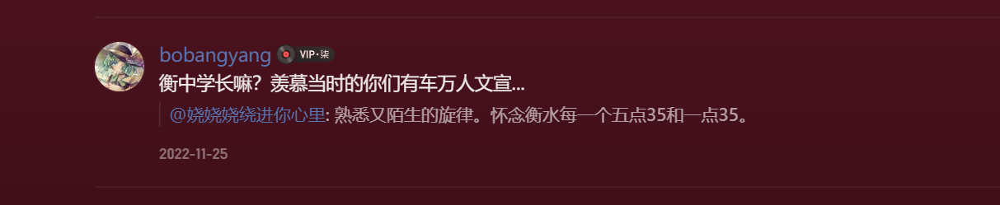
衡中除了起床铃是文宣部管的，每天会有个课间铃，放一段悠扬的钢琴。如果说起床铃需要和正能量有关，有一点限制，那课间铃纯钢琴就没有任何限制了，文宣部的大佬们可以尽情自由发挥他们的二次元热情，果不其然，课间铃里八成都是二次元音乐，各种番op游戏bgm，只是统一找了钢琴版本。我们班里几个二次元的一大乐趣就是当听到课间铃改了的时候就去讨论这又是哪个番里的op，我也是在那段时间通过《Don’t say “lazy”》了解到了轻音少女，成了高考后刷的第一部番。这些课间铃里有炮姐、jojo、未闻花名、拼凑的断音、病名为爱、团子大家族，还有触手猴钢琴版本的神々が恋した幻想郷，可以说抛开学习压力以外，衡中的二次元吃的真是太好了。衡中文宣部在网易云上有官号，但是他们只做了起床铃歌单，后来凭借自己的记忆和班里老资历二次元的帮助，成功拼凑出了课间铃的歌单。
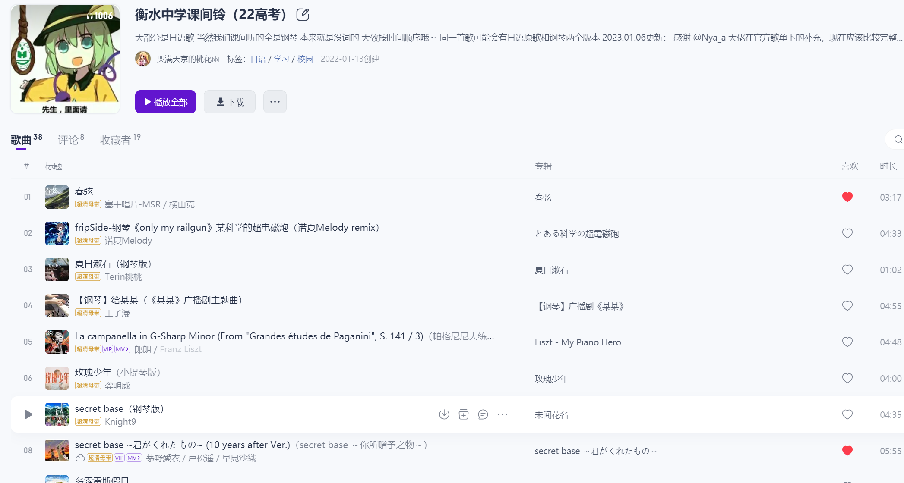
高考后，我在家刷了轻音，刷了魔圆，刷了石头门，一个暑假刷了相当多的番，仿佛是想一口气补上和班里老二次元的差距，魔圆剧场版叛逆的物语甚至一口气刷了三遍。还玩了原神，虽然后来陆陆续续退坑了很多次，但闲暇的时候也会想起来玩一会儿。
这个暑假我还推了《水仙》，人生相谈级的作品呀，虽然是零几年的老作品但是我会推荐给每一个认识的人。我用笔和纸把作品里的一张CG画下来，这张也是我最后一次用普通A4纸和老铅笔老橡皮画画。
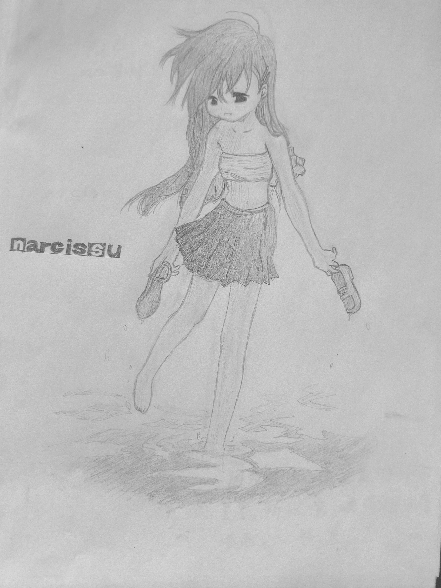
东方同人社团幽闭星光有一首比较好听但是并非东方同人曲的歌《大地に咲く旋律》，根据评论所说，作曲是通过自己对成都的映象来创作的，表达充满灵性的成都土地的赞美。正巧，我也很喜欢这首歌，在往成都的高铁上，我听着这首歌，迎来了我的大学时光。
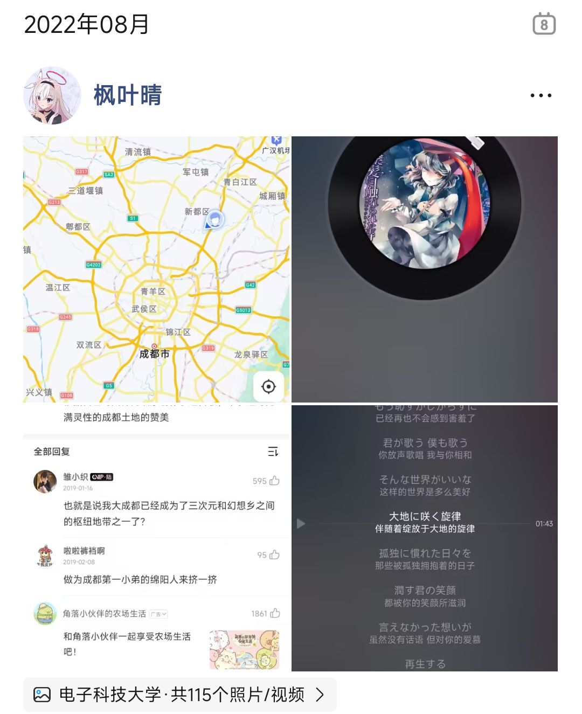
五、大学生涯
到成都上大学喽，由于疫情原因军训推迟了，我们马上投入到了忙碌的大学生活。从开学第一周开始，我每天晚上在被窝里追番，当时正值蒜吻大战，我不知道吻是啥，但是追蒜追了好几周（是的我承认是白河豚），结果最后烂尾了。。。有点失望，不过还是留下了不错的回忆。经此一战，从此再也没有真正意义上的追过一部番，我承受不了一周只能看一集的煎熬，还有害怕烂尾的风险，我只会去补那些评价普遍不错的老番（happy sugar life除外）。
上大学之后，自己的音游水平直线上升，在音游上确实花了不少时间，21年高考后入坑的phigros，22年高考后入坑的arcaea，大二入坑了啤酒烧烤，以及大三开始打舞萌，每一个都玩了很长的时间。音游确实是与二次元完全绑定的关系，我喜欢arcaea里的光与对立，喜欢啤酒烧烤里的25团，大学通过音游认识了很多同好，留下了很多美好的回忆。
大一下学期，我抢到了学校的素描选修课，买了素描纸和正经的绘画铅笔和橡皮，这才有了像样的临摹工具。素描课主要也是图个选修学分，本来也没打算学到什么，画过一些瓶瓶罐罐之后，留下的只有空空的脑袋和厚厚的素描纸。我想虽然画素描我水平不如班里大佬，但我可以拿来画点二次元啊。正值当时neuro-sama刚刚出道，就拿新配置画了第一张画。
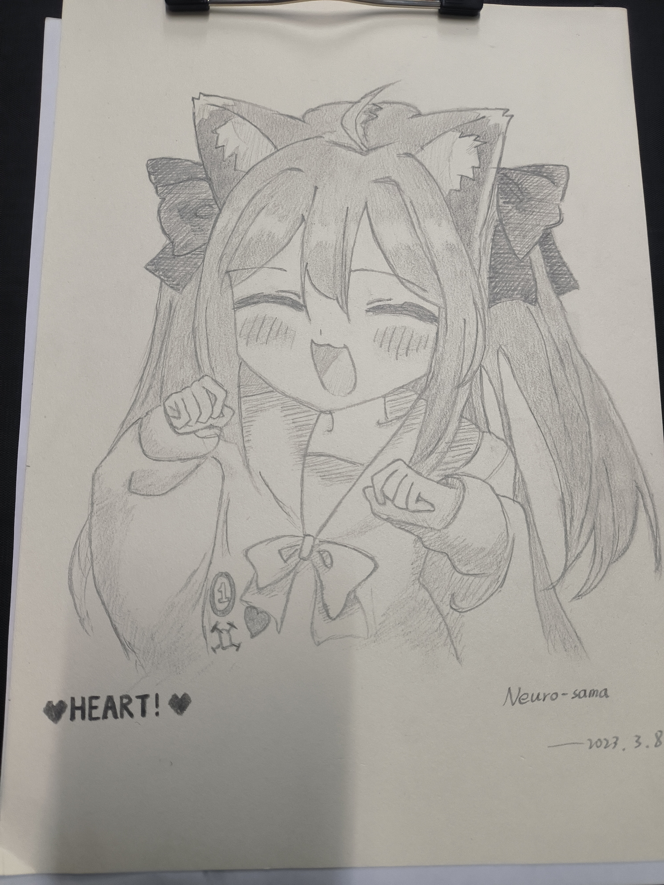
大一入坑的碧蓝档案，目前仍然是自己最喜欢的二游ip，游戏的各种人设物设十分出众，剧情也是二游里独一档。不过作为一个抽卡游戏肝度实在太变态，玩一段时间退坑但并没有退出这个社区，我还是喜欢保存ba的同人图，刷官方号的视频，或者听听优香的AI翻唱（难崩，好有感觉）。后来想回坑看看学生们，结果nexon账号消失不见了，遗憾离场，这个账号的消失确实是我二次元最大的遗憾了。当年我用素描纸临摹的各个学院logo，画的十分标准：
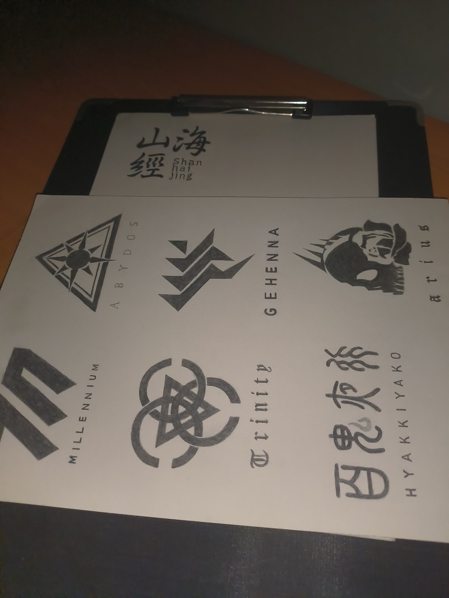
军训被推迟到了大一结束的暑假，经过大一一年的洗礼，我们大学生们的脆皮属性已经直线上升啦。教官们也没有多刁难我们，除了排练各种指令以外没有什么体能训练，下雨或暴晒时还可以上看台坐着唱军歌。晚上睡觉，在大伙累垮了呼呼大睡的时候，我一个人抱着电脑在床上推旮旯，推八月社的最后一个作品《千之刃涛，桃花染之皇姬》，大家简称皇姬，我喜欢叫千桃。这个作品剧情有争议，主要是有很多出戏的地方，但是歌很好听，我很早之前就听过ed月夜花了，作为八月厨，虽然军训很累，但是推千桃的时候还是充满精神。女主朱璃作为皇姬从小就很坚强不掉眼泪，每次想哭泣的时候都会让桃花花瓣落下来代替眼泪，结尾男主似了，朱璃站在山上望着京城，大哭了一场，桃花瓣像雨一样洒满了京城的每一个角落，我现在的网名“哭满天京的桃花雨”正是来源于此，“桃花雨”正好和老网名“枫叶晴”成反义。每天推到凌晨三四点，早上八点起来军训，一整天高强度的站桩，现在想想当时能活下来简直是个奇迹，八月厨真是不要命了。
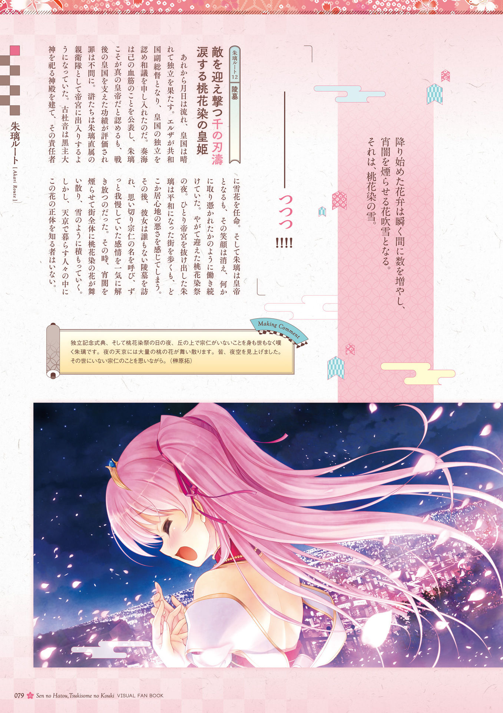
樱之诗是一部神圣的作品，由于篇幅实在太长了我是分两次推完的。第一次看到御樱禀在樱花树下的CG直接被美哭了，用整页纸画了下来。一整部作品里全是绘画天才啊，然而我并不能欣赏他们的创作，一群追求抽象与精神飞升的天才，我只能感受到，嗯，大伙都在十分认真努力的样子，大家都在梦想的道路上努力着，只有我越来越佛系了，唉，青春真是美好啊。（樱之诗的音乐也很不错哦，真的是一部很神圣的作品，我推荐每个有空的人一定要体验一番）
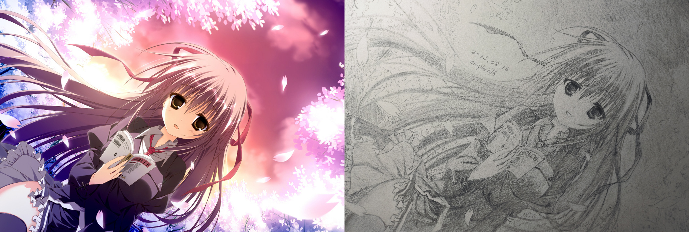
大二刚开学，我看了一部扭曲猎奇百合番，大名鼎鼎的《happy sugar life》。虽然我好像有预感砂糖会把她的好闺蜜翔子给🔪了，但是真到那集也给我看傻了，闺蜜确实做的不对但肯定是罪不至死呀，我这么可爱的翔子突然就成了一句实体了。。。和网上大部分磕糖盐的不同，我连续临了两张糖翔来表达对这对好闺蜜的惋惜。整个番剧就是一个巨大的悲剧，披上了百合的糖果外衣罢了。
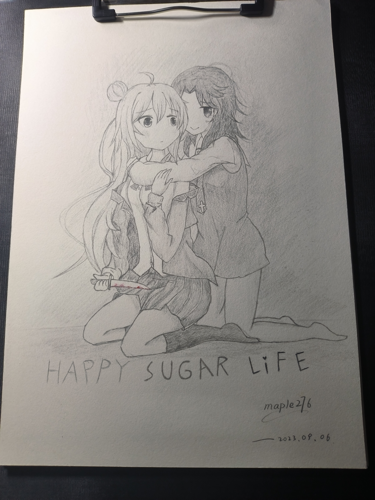
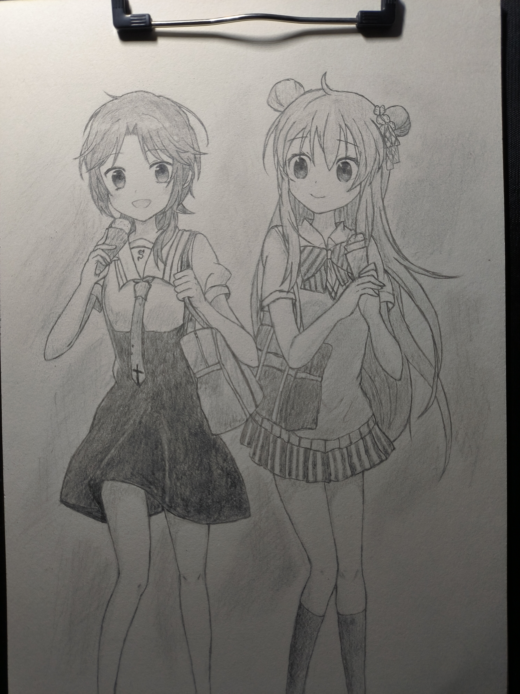
大三下学期去东莞实习半年，实习期间没有安排什么重活儿，每天都是晚饭点按时下班，但是精神上非常劳累。本来打算在实习期间突击练习半年的绘画基础，没想到一开始上班就身心俱疲，每天回到租的房子里就重重地躺在床上，有精力时也只会去打一会儿cs，仿佛已经过上了将来那一眼望到头的日子。由此看来，闲暇时期的自己做出的规划真的是不能让自己信服，没办法，我可能确实算得上是那种没有规划随波逐流的性格吧。实习期间没怎么推旮看番，只是有一天重新刷了一遍秒五，比三年前好像多了一分感慨，秒五真的是一部值得在人生不同时间点重温的一部电影，或许每次都会有不同的感受吧，看完之后躺在床上久久不能入睡，仿佛自己失去过什么，仔细想想，好像其实什么也没得到过。唉，别被他人的故事感染自己了，赶紧打起精神做自己的事罢。素晴日同ip的终之空remake出了，新立绘很好看，临之！由于每天只有空临一小会儿，两张立绘甚至直接花费了我一周时间，我到底是闲呢还是忙呢？
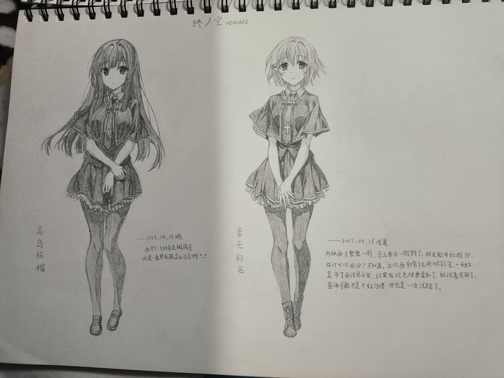
忙保研的那个夏天，我一边实习请假一边跑到全国各地参加夏令营面试，碰壁了几次，压力很大，老同学小红在那期间给了我不少的帮助，帮我改简历，劳动节陪我去武汉玩（去三色绘恋的圣地打了卡）。期间我正在推夏日口袋，我喜欢里面的一首bgm《夜は短く、空は遠くて…》，长段的静谧之后，煽情的中提琴把情感推向高潮，这首是在我第一条线推苍线的时候喜欢上的，我一直把它当做苍的主题曲，仿佛整个夜晚都是苍的主场，那个夏天，每个夜晚对自己来说也是静下心来安养生息的时刻。最终尘埃落定，我保研到了南大的计算机，不知道未来如何，但那个夏天成了永远的回忆。
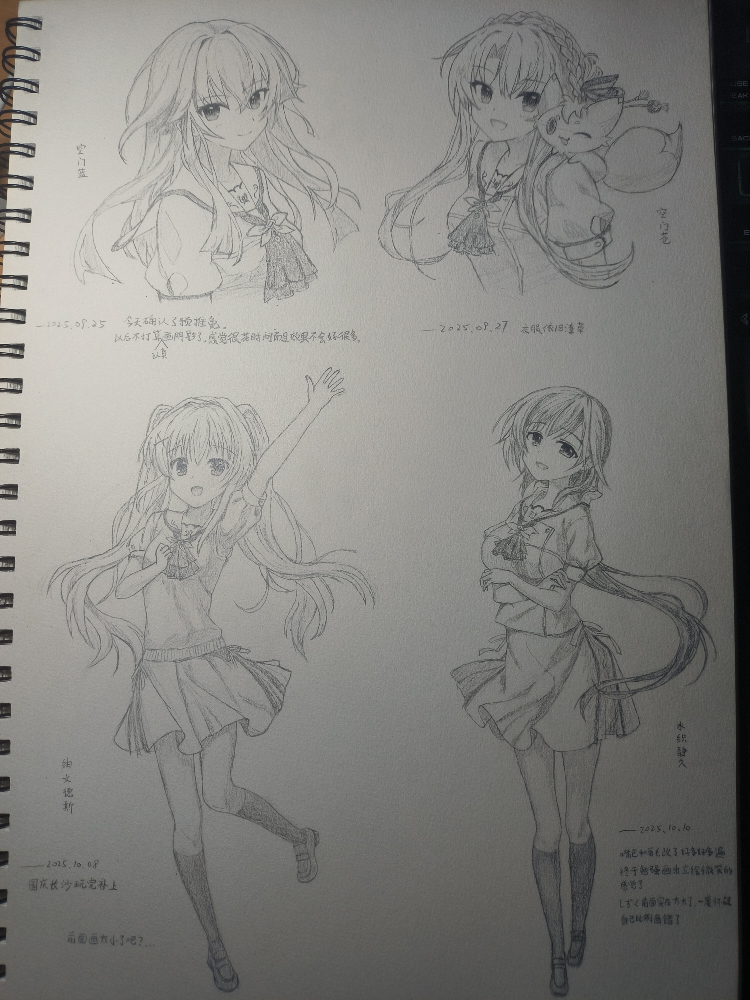
大四的寒假，作为白河豚，我去试了试朋友们都在推荐的《买个可乐饼吧》，尽管我不怎么对rpg感冒，我还是很认真地把内容推完了，搞了个全成就。玩完去搜搜同人图看，结果找遍了全网没看到一点点粮食，好家伙总不能让我自己画吧。因为大四只有毕设，我又不用考研，确实有空去系统学一下板绘了，便搞了个新的wacom数位板，照着b站各个自学教程去练，别管练的好不好是不是歪路有没有用，我只能说反正是在练了。至于报课嘛，我实在不知道途径，也觉得自己不喜欢那种按部就班的练习，进步慢无所谓了，反正只是个爱好，自己学的开心就行了。
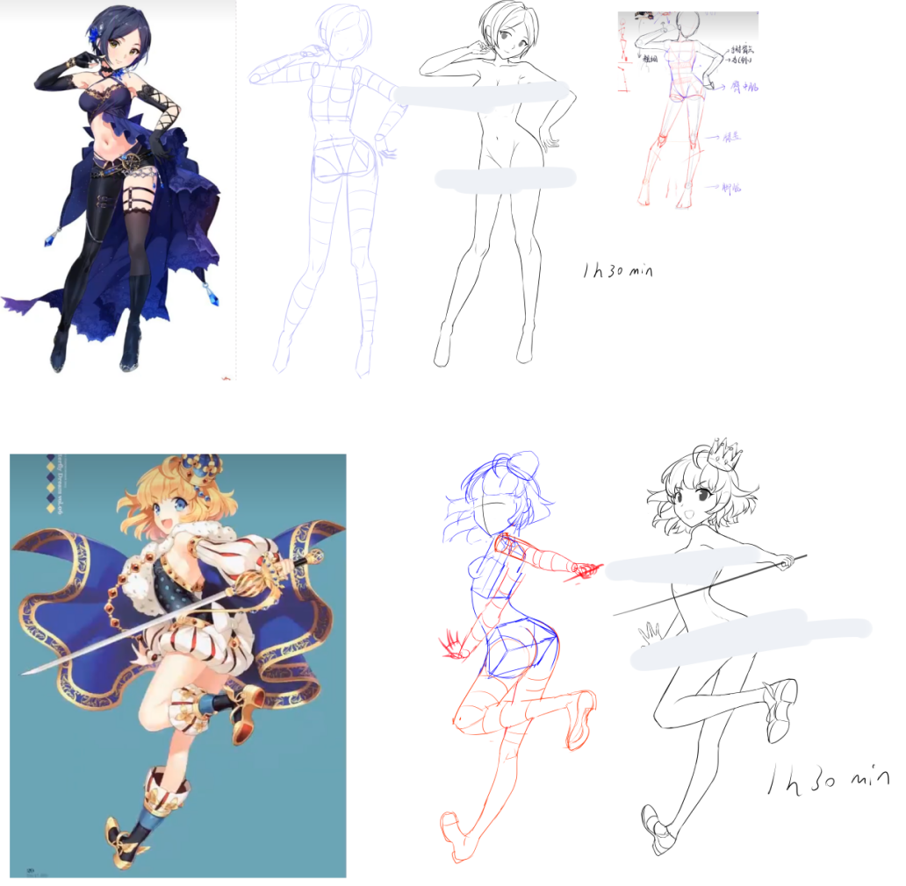
后来要去学校做毕设中期报告了，没空再练了，我觉得学了这么久，别管学了多少，有没有好好学，我总得做点实践性的尝试吧，便凭借着自己薄弱的功底，歪歪扭扭地画了人生的第一张原创图，内容就是前几天玩的《买个可乐饼吧》，画了小满和千绪的贴贴。图是在毕设答辩完之后才完工的，画完后我先投稿到了pixiv上，后来感觉确实画的好丑啊所以删掉了，我绘画基础差但是我审美是正常的呀，现在还是不成熟的时候少给自己留下黑历史吧。虽然画的很丑，但是毕竟这是我的第一张作品，我还是会好好的珍藏下来。我感觉新手学画画不一定要等到基础完全达标再去画，很多零基础的人都倒在了大伙所强调的基本功下，基础不牢地动山摇，可是你连山都没有你摇什么摇啊。一边画一边练，有想法就画，画完不一定要给别人看（作为新手大概率是画不出别人想看的画的），至少可以维持住自己那一丢丢的画画热情。
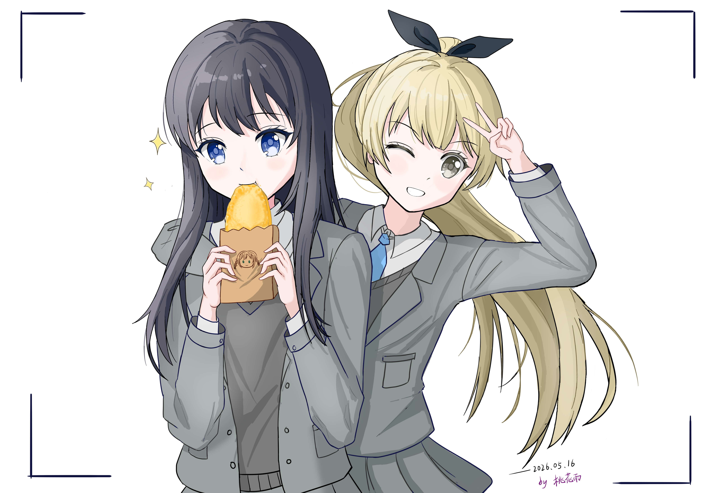
到了现在，我也在陆陆续续地补自己的基本功，而且脑海里有什么想法就去画一下。投稿的那张头像不是自己的第二幅画，期间我还有个画了一半不想画的彩叶，画过死别pv风格的诗音（我做了AI诗音的翻唱，后来咕咕咕了没有投稿到b站上）。由于现在人体学的还不够好（不练个一年速写，把自己画的人体发给别人看就等着被骂吧），所以给自己画头像时只画了大头照，不敢再往下多画了，画完后效果也是出乎意料的还行，至少不是丑的不能看的那种，这其实并不得益于我的基本功，而是两小只的形象设计本身就很耐看。不管怎么说，希望以这张原创的头像作为一个起点，在学习板绘的道路上继续努力吧！希望几年后的自己回顾这篇自传时，绘画水平又高了一个档次，而不是呜呜呜，没时间啊，已经不画了。哈哈，希望一切顺利！
后记
大学期间我玩过很多让我记忆深刻的游戏，看了很多非常喜欢的番，但是篇幅有限我不能在此一一讲述，正文部分我还是尽量挑出了和画画有关的内容。番剧如《少女歌剧》《利兹与青鸟》《黄金拼图》《狐妖小红娘》《游戏人生》《超时空辉夜姬》《死亡笔记》等等，《契约之吻》后来在实习的时候也补了，蒜吻大战感觉是吻小胜了。游戏如《米塔》《蔚蓝》《终焉莉莉》等等，莉莉很可爱，音乐很好听。旮旯推过《eden*》《纸魔》《素晴日》，《白2》那个胃痛的冬天记忆犹新，《三色绘恋》成了自己推的第一个国gal，在正文中也提到我在武汉玩耍时圣地巡礼过。将来我也有机会接触更多喜欢的作品，每次我都在想，刷完一个新的作品如果有能力画点同人图该多好啊，这样就不只是一个只会索取的观众，而是一个能产粮的厨子啦~
顺带一提，我那张pixiv投稿写前言时还是30收藏，到现在已经60收藏了，账号粉丝数涨到了4个，莫名其妙的。现在的自己早就没了b站初投稿时那种小心翼翼的感觉了，只希望以后自己能创造更好的作品吧。
除此之外，如果是对我画画经历感到好奇的陌生人，我感觉你能看到这里还真挺佩服的，毕竟我讲述的全都是我自己与画画的无聊日常。每年b站都有百日绘画的活动，有很多高手老师批发粮食，吃都吃不完，不过，其实我想说大部分人都是普通爱好者，没有百日的时间，也没有能连画一百天的能力基础，基础不好的原因也是没时间学，说白了时间才是一个人青春最宝贵的财富。记录下自己的故事，如果你也是一个喜欢画画的普通人，我希望能有一些共鸣，也希望消除一下对网络上画佬们的滤镜，在我人生的各个节点记录自己的经历，看看一个真正普通的人的学习过程，一个喜欢二次元喜欢画画的普通人是怎么成长的。
还有就是，很可惜初三之前的所有内容没有以照片的形式保存呢，甚至当时连可以拿来考古的日记都没写过，只能通过回忆了。
作为一个二次元，大学期间也买过不少谷子，最集中的四次是：1、广州2025COMICUP同人展。2、国庆和朋友去长沙奇谷米谷子街。3、杭州西湖边谷子街。4、成都各个地方谷子街（最后毕业要离开成都时才去的，才知道成都谷子街这么权威）

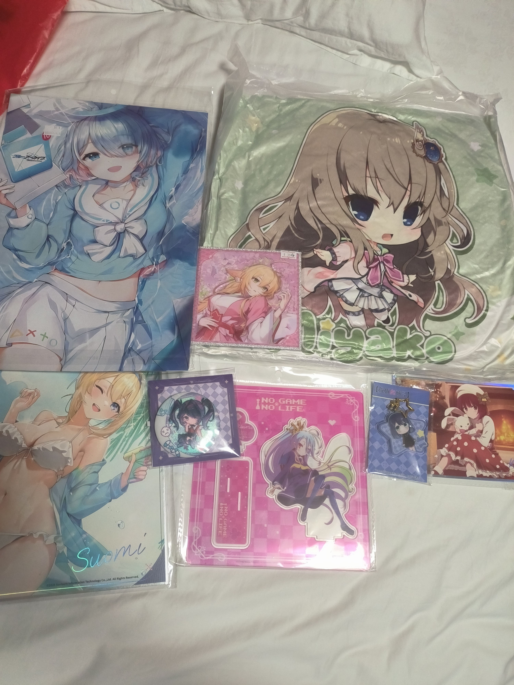
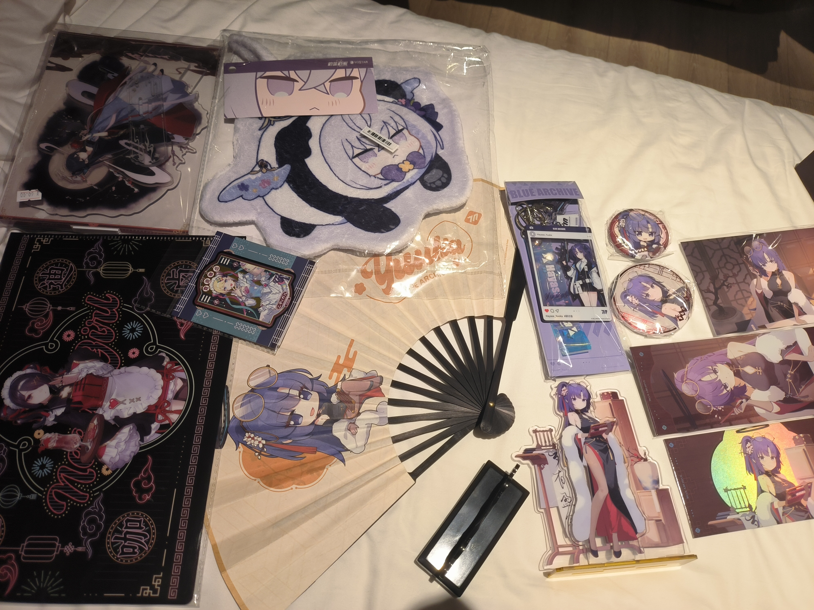
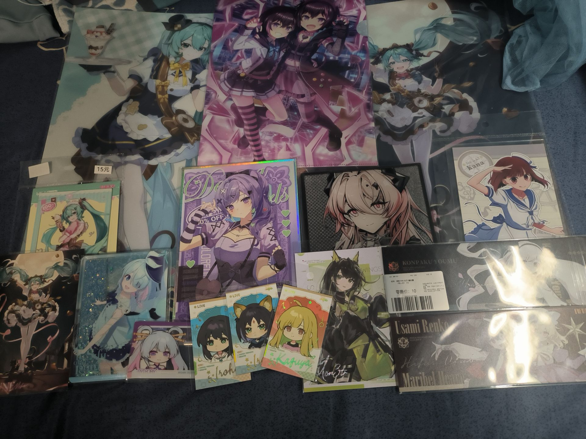
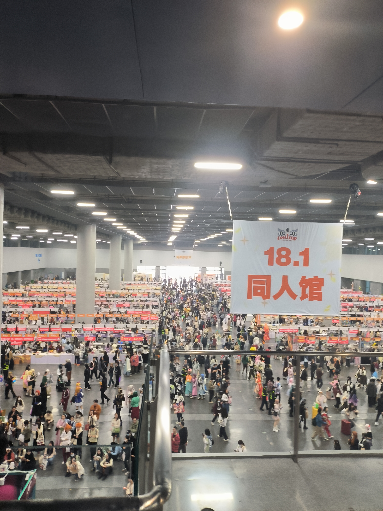
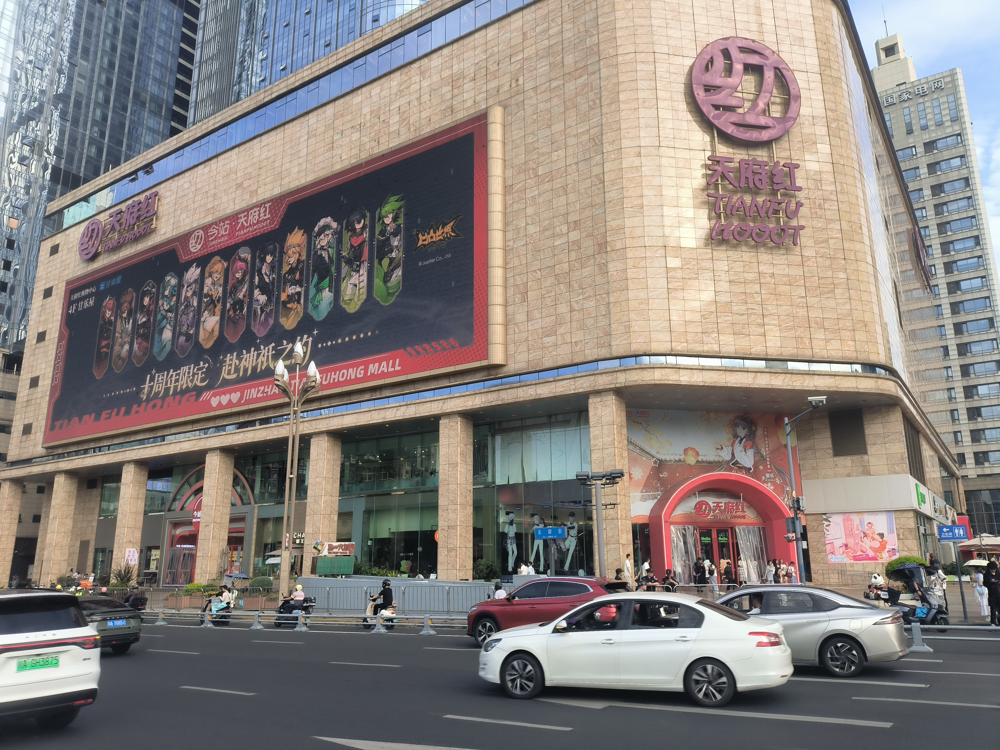
毕业前玩了一款叫《最后指令》的贪吃蛇躲弹幕游戏，感觉那个像素风的小立绘很适合拼豆！于是就自己做了图纸，在舍友的帮助下第一次体验了拼豆店，也算是离开成都时的告别。虽然是第一次体验但是拼的速度老快了哈哈，下面是我拼了两天的量。
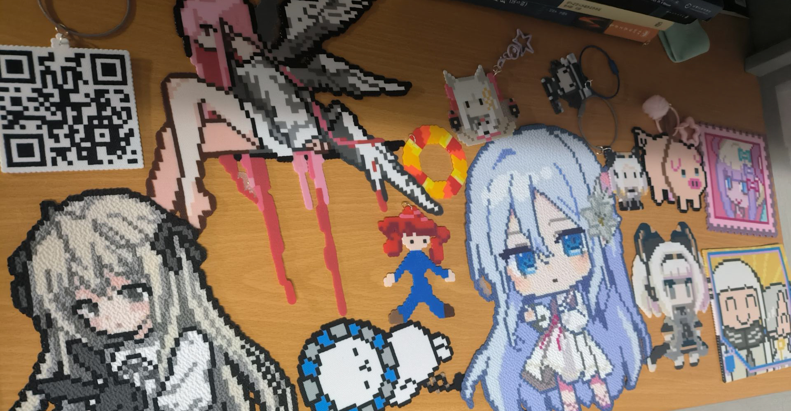
最后是一些散图：
在常州那几天手机的锁屏壁纸：萩原凛老师的苍灵梦。
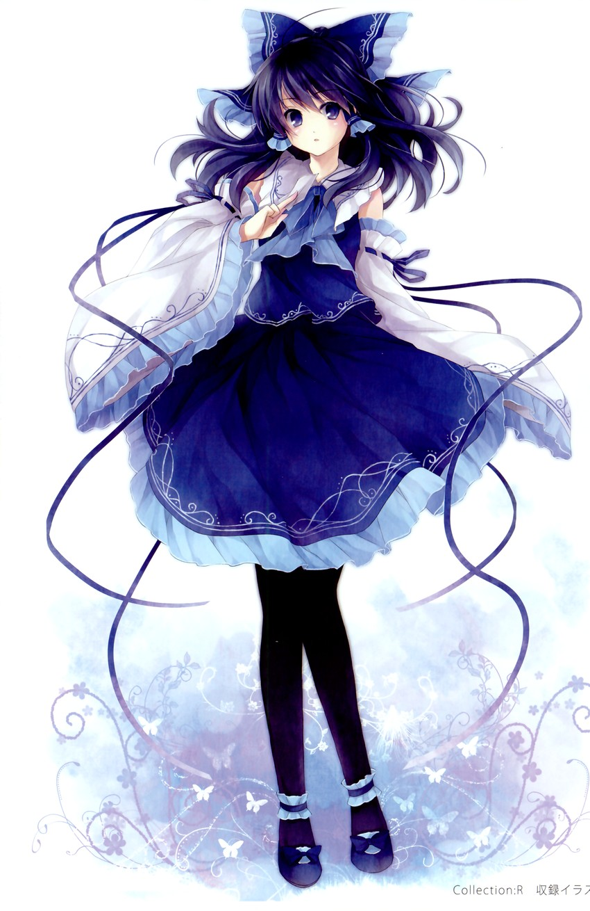
高三百日时摸的一张图，上白泽慧音球：
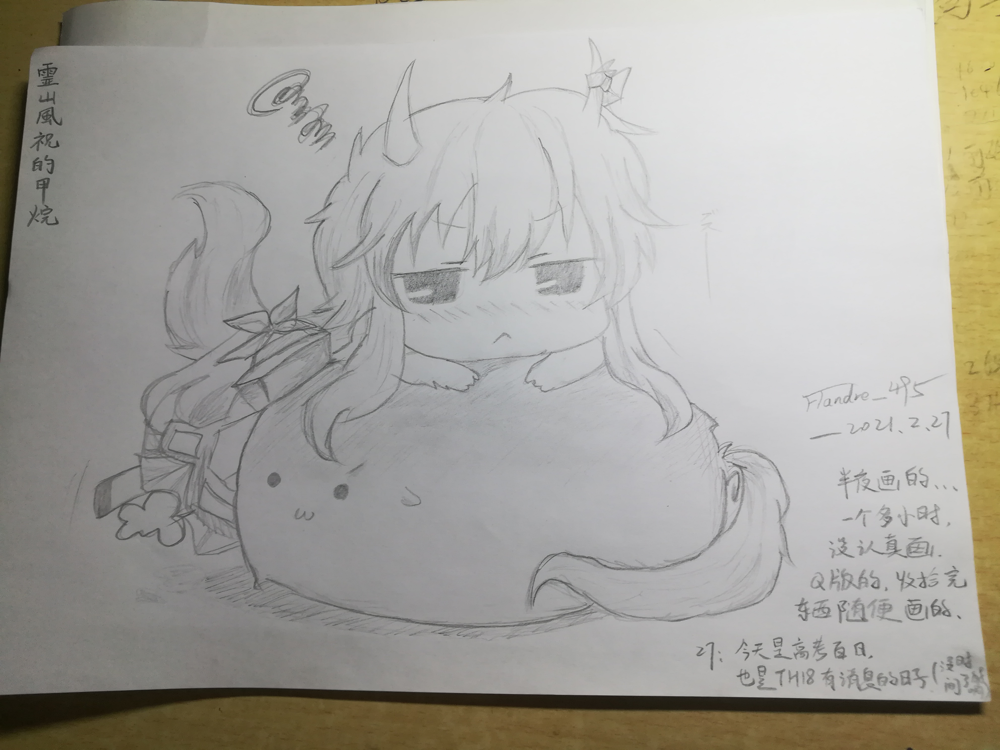
高三时我刷了东方同人作品秘封活动记录，曾经拿第二集主题曲《風の唄》的早苗封面跟我那个喜欢Hiten的朋友说，五年后我画画也要到这个水平。这事估计他已经忘了，但我记得很清楚，因为我认为五年后就是大学毕业后一年，就算大学四年很忙毕业后一年我也能上升一个档次吧。然而现实是，加上复读那一年现在已经五年了，五年前的自己真是有点不自量力了。
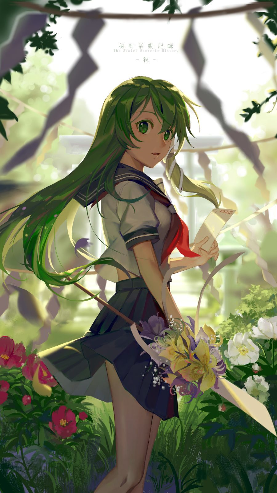
玩舞萌时最喜欢的一首歌《私のドッペルゲンガー》，我的分身，花谱与可不。
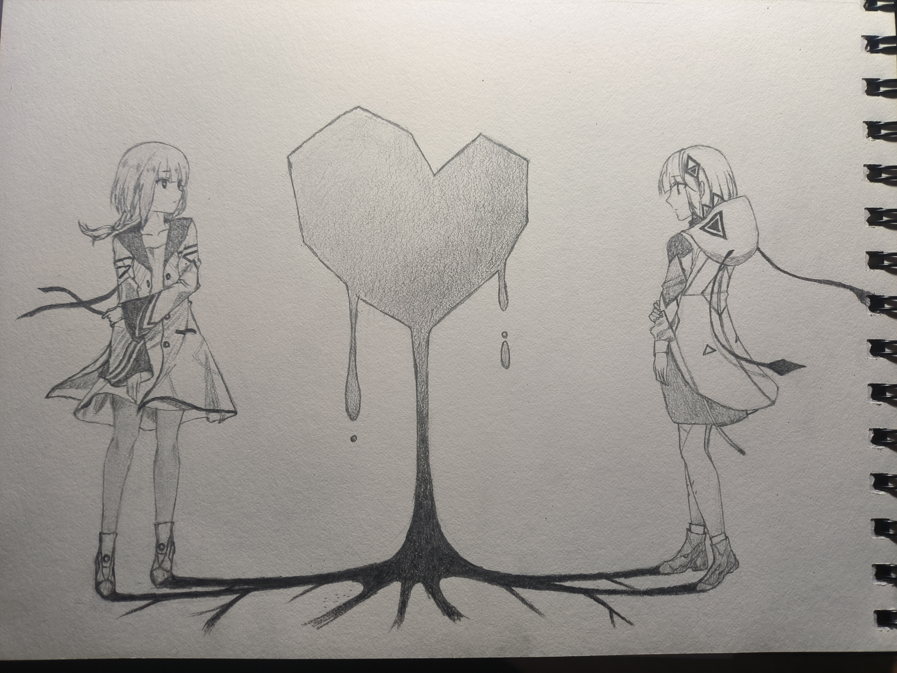
实习期间画的小橘子天台名画。

武汉三色绘恋圣地巡礼，剧情里事故多发区的中山广场的喷泉，在稻当劳和墨小菊一起吃草莓新地。
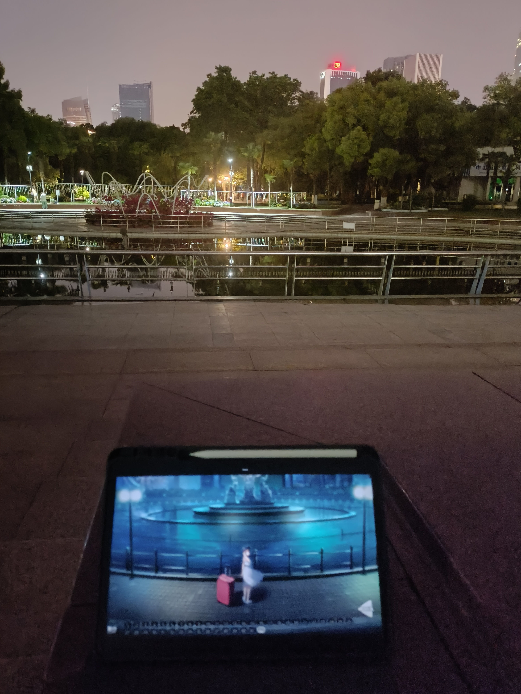
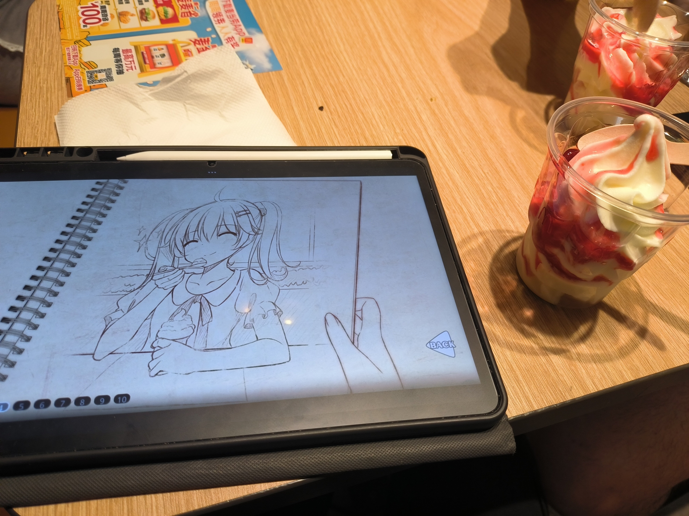
完！~
—-2026.08.07